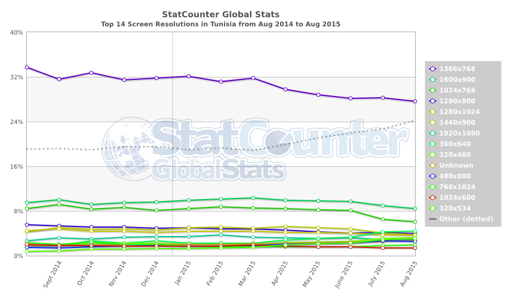
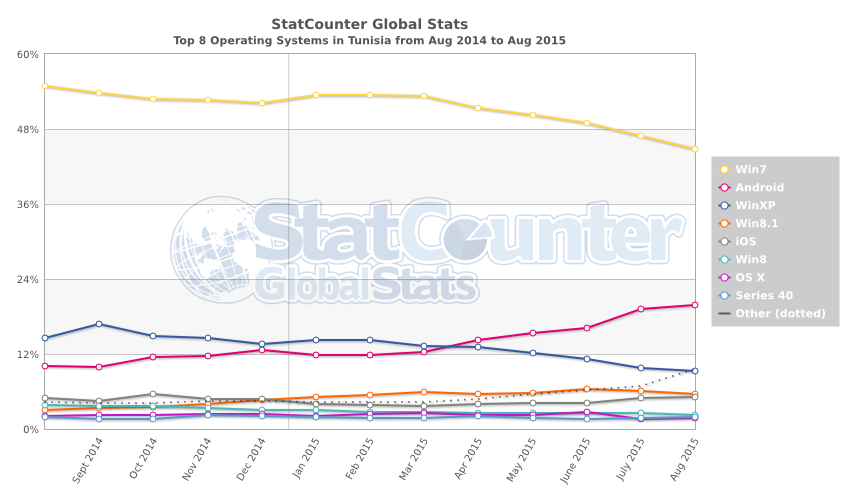
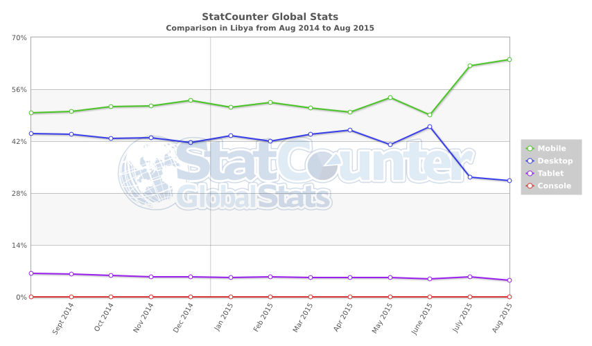

-
Короткі відомості
Алжирська Народна Демократична Республіка — країна на півночі Африки. Найбільша за площею країна Африки. Населення, за підсумками перепису 1998 року, склало 29,100,867 осіб наявного населення, за даними на 1 липня 2014 року — 38,813,722 осіб наявного населення. Столиця — Алжир. Державна мова — арабська.
Країна на сході межує з Тунісом і Лівією, на південному сході — з Нігером, на південному заході —з Малі, на заході — з Марокко , на півночі — Середземне море.
Таблиця 1. Використовувані браузери (ТОП-3)
№ Назва країни І ІІ ІІІ 1 Туніс GC 63.74% FF 12.51% A 6.46% 2 Лівія GC 37.03% O 21.62% A 12.34% 3 Нігер O 44.3% A 14.98% UC 10.98% 4 Малі UC 26.41% O 17.42% A 15.17% 5 Марокко GC 52.42% FF 18.7% A 9.45% GC – Google Chrome; FF – Firefox; O – Opera; UC – UC browser ; A – Android
-
Таблиця 1-a. Використовувані браузери
№ 2014-2015 1 2 3 
4 
5 Таблиця 2. Використовувані розширення екрану (ТОП-3)
№ Назва країни І ІІ ІІІ 1 Туніс 1366x768 30.78% 1600x900 9.63% 1200x800 8.17% 2 Лівія 1366x768 22.91% 480x800 8.84% 360x640 6.91% 3 Нігер 480x800 10.64% 1366x768 7.1% 1280x800 6.87% 4 Малі 480x800 10.88% 800x600 8.61% 1366x768 7.31% 5 Марокко 1366x768 21.0% 1024x768 14.22% 1280x800 8.4% -
Таблиця 2-a. Використовувані розширення екрану
№ 2014-2015 1  2 3 4 5 -
Таблиця 3. Використовувані операційні системи (ТОП-3)
№ Назва країни І ІІ ІІІ 1 Туніс W7 51.56% A 13.44% WX 13.34% 2 Лівія A 39.64% W7 30.09% iOS 7.35% 3 Нігер A 57.21% W7 11.14% S40 4.92% 4 Малі A 41.55% W7 13.89% SG 6.9% 5 Марокко W7 36.92% WX 21.49% A 19.2% A – Android; W7 – Windows 7; SG – Samsung; WX – Windows XP; S40 – Series 40
Таблиця 3-a. Використовувані операційні системи
№ 2014-2015 1  2 3 4 5 -
Таблиця 4. Використовувані пошукові системи (ТОП-3)
№ Назва країни І ІІ ІІІ 1 Туніс G 92.02% Y 3.0% AJ 2.4% 2 Лівія G 93.95% Y 2.19% B 1.84% 3 Нігер G 89.07% Y 5.11% B 3.65% 4 Малі G 90.25% Y 4.53% B 3.85% 5 Марокко G 95.72% Y 1.69% AJ 1.39% G – Google; Y – Yahoo!; B – bing; AJ – Ask Jeeves
-
Таблиця 4-a. Використовувані пошукові системи
№ 2014-2015 1 2 3 4 5 -
Таблиця 5. Використовувані платформи (ТОП-3)
№ Назва країни D M T 1 Туніс 77.99% 18.3% 3.7% 2 Лівія 41.63% 52.94% 5.41% 3 Нігер 17.74% 80.69% 1.57% 4 Малі 20.38% 78.12% 1.49% 5 Марокко 70.75% 25.54% 3.7% D – Desktop; M – Mobile; T – Telephone
-
Таблиця 5-a. Використовувані пошукові системи
№ 2014-2015 1 2  3 
4 5